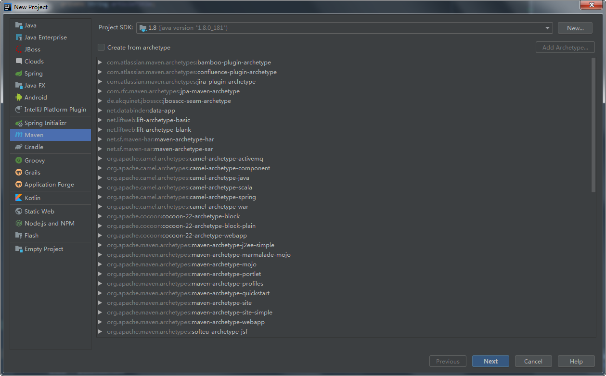
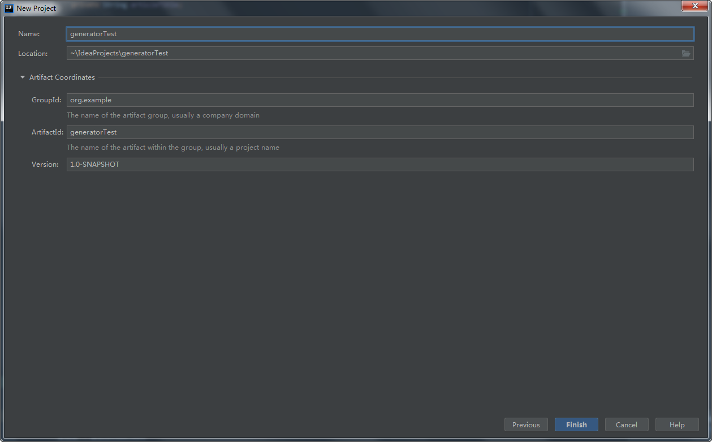
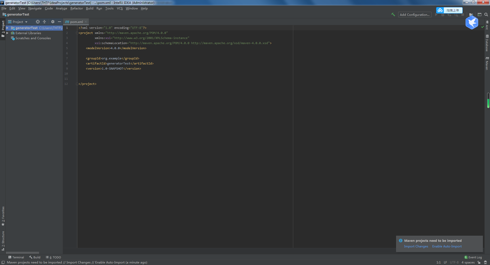
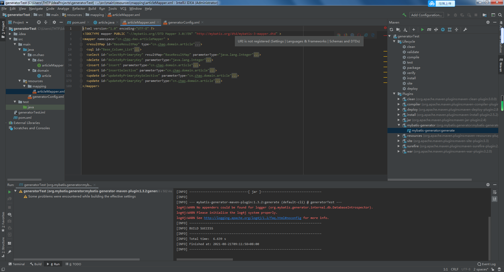
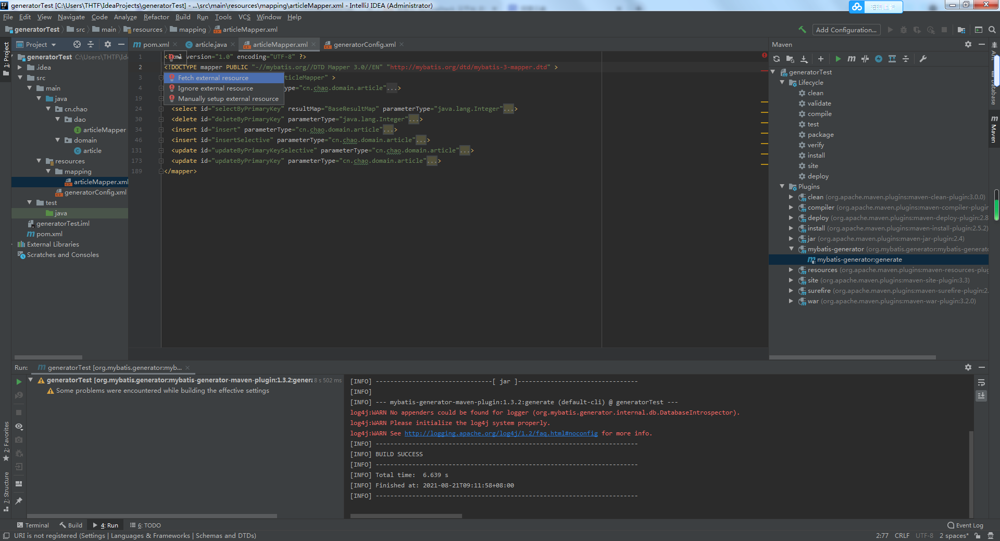

1. 2.  3.  4.【File】--【Settings】--【Build,Execution,Deployment】 5.配置到自己的Maven目录与仓库
URL is not registered

右键拉取即可 
Maven入门https://juejin.cn/post/6844903543711907848
 5.配置到自己的Maven目录与仓库
5.配置到自己的Maven目录与仓库